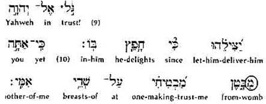

Contents
Did Yahushua Pre-exist?
The Scriptures clearly shows that Yahushua had no existence prior to his birth in Bethlehem, 2000 years ago. He was born of the virgin Maryam, by the overshadowing power of יהוה
Luqas 1: 30-35
Nowhere is it suggested that he existed before his birth. Take, as example, the opening verse of the Brit Chadashah/New Testament:
"The genealogy of Yahushua Messiah the SON of David, the SON of Avraham [the seed of 2 human beings are necessary for a SON OF MAN- see G1223 sarx- σάρξ Thayer Definition: used of natural or physical origin, generation or relationship; born of natural generation; the sensuous nature of man, "the animal nature"; the animal nature with cravings which incite to sin ;the flesh, denotes mere human nature, the earthly nature of man apart from divine influence, and therefore prone to sin and opposed to God; carnal (-ly, + -ly minded); by implication human nature (with its frailties (physically or morally) and passions]".
Yahushua declares 87 times himself that he is the SON OF MAN!
If Yahushua lived in some form before Avraham and David, he was not their son, and the statement is false. We believe that the statement is true, and all Scripture agrees therewith. Consider the record of his early childhood:
Luqas 252 "Yahushua increased in wisdom, and stature, and in favour with יהוה and man"
How can these words possibly apply to a pre-existent angel, or the second person of a Triune? Could such a one increase in wisdom and in favour with יהוה? Assuming the impossible were true, and Yahushua pre-existed as an angel, on what grounds could it be said that he increased in favour with יהוה merely because in his new state he grew from a baby to a youth!
If Yahushua pre-existed, he must have divested himself of all previous identity, lost all his former knowledge, power and standing with יהוה, and had to establish this all again! What for? What did it accomplish? Is such belief logical? We shall show it is unscriptural!
The Thread of Evidence Throughout The Scriptures. Throughout the Tanach/Old Testament the promise of Messiah is proclaimed; throughout the Brit Chadashah/New Testament the person of Messiah is described.
He was the "seed of the woman" promised from the beginning, to destroy the law of sin and death which was the product of the misguiding influence of the serpent (Bereshit/Genesis 3:15). The Brit Chadashah/New Testament comments:
Galatiyim/Galatians 44 "When the fulness of the time was come, יהוה sent forth His son, made of a woman, made under the law, to redeem them that were under the law"
If Messiah pre-existed, how could he be described as the "seed of the woman?"
Avraham was taught: "In your seed shall [future tense] all nations be blessed" (Bereshit/Genesis 22:18).
Sha’ul commented: "And that SEED is Messiah" (Galatiyim/Galatians 3:16).
Would Avraham imagine that his seed (son) existed before he did? Of course not! Where is there any evidence in Bereshit/Genesis that Yahushua was then living in any form? There is none!
Mosheh, Yisra’el's prophet, law-giver, messiah and leader, [who typified the coming Prophet, Law-giver, Messiah and Leader (Yahushua ha Mashyach)] told the Yisra’elite nation:
Devarim/Deuteronomy 1815 " יהוה your Elohim shall raise up for you a Prophet like me FROM YOUR MIDST, from your brothers. Listen to Him.. 18I shall raise up for them a Prophet like you out of the midst of their brothers. And I shall put My Words in His mouth, and He shall speak to them all that I command Him. [Ma’asei/Act_3:22-26; 7:37]”
Kepha/Peter quoted those very words and applied them to Yahushua Messiah (Ma’’sei/Acts 3:22; 7:37), and Sha’ul taught:
Ib’rim/Hebrews 2
17" So in every way he [Yahushua] had to be made like his brothers, in order to become a compassionate and trustworthy High Priest in matters related to Elohim, to make atonement for the sins of the people.“
Can the words of Mosheh above apply to a pre-existent angel? Could such a one be truthfully described as "raised up from the midst of you," "of your brethren, like unto Mosheh?" Only a false theory could possibly make those words apply to a pre-existent angel.
Yahushua was the son of David, and David was told:
Shemu’el Bet/2 Sam. 7:12-14
12 “When your days are filled and you rest with your fathers, I shall raise up your seed after you, who comes from your inward parts, and shall establish his reign. 13 He does build a house for My Name, and I shall establish the throne of his reign forever. 14 I am to be his Father, and he is My son. [יהוה said it will be from David’s seed. יהוה is not man and therefore have no DNA, but He will be fathering him. Yahushua’s reign will be established] If he does perversely, I shall reprove him with the rod of men and with the blows of the sons of men.[that speaks of the definition of flesh-sarx G1223]“
The prophecy relates to Messiah, as the Brit Chadashah/New Testament comment upon it makes abundantly clear (see Luqas 1:32-33; Ib’’rim/Hebrews 1:5)
Note well the future tense used in relation to him. יהוה says: "I WILL BE his Father," he "SHALL BE My son." If Yahushua were already in existence, should not יהוה have said: "I am his Father," "he is My son"?
Maryam was told:
Luqas 1:32-33
32"He shall be (not is!) great, and shall be called the Son of the Highest; and יהוה Elohim shall give unto him the throne of his father David; and he shall reign over the house of Ya’’qov for ever; and of his kingdom there shall be no end"
Ib’rim/Hebrew 53And on account of this he has to offer for sins – as for the people, so also for himself.
These words of the angel Gabriel state that Yahushua "SHALL BE called the Son of the Highest," and he shall reign on the throne of "his father David." Can these expressions apply to one already in existence?
Consider also the preaching of the Apostles. Did they proclaim belief in a pre-existent angel who had assumed human form? They did not. Listen to Kepha’s/Peter's preaching:
Ma’asei/Acts 230 "David . . . being a prophet, and knowing that יהוה had sworn with an oath to him, that of the FRUIT OF HIS LOINS, according to the flesh, he would raise up Messiah to sit on his throne"
Whom did David believe would sit upon his throne? An angel who was already in existence? No; he believed the one who would reign there would be "the fruit of his loins," that is, a descendant. The boy born of Maryam was a descendant of David, not a pre-existent angel assuming human form!
Yeshayahu/Isaiah declared in chapter 7:
14 "A virgin shall conceive and bear a son [not a god-man], and shall call his name Emmanuel"
That prophecy was fulfilled in the birth of Yahushua (Matt. 1:23), whom Kepha/Peter described as "a man approved of יהוה . . . by miracles and wonders which יהוה did by him" He was set up by יהוה for a specific purpose and the plan was from the beginning for an appointed time.
Ma’asei/Acts 222“Men of Yisra’ěl, hear these words: יהושע of Natsareth, a MAN from Elohim, having been pointed out to you by mighty works, and wonders, and signs which Elohim did through him in your midst, as you yourselves also know, 23this One, given up by the set purpose and foreknowledge of Elohim,
In short, יהוה revealed Himself in a man of His providing who became the pattern for all those who would approach unto Him in hope of eternal life. יהוה does not expect that such will attain unto the perfection they behold in the Son, but He does require of them that they build into their lives some of the divine characteristics that they see there revealed. By so doing, they develop a character worthy of perpetuation in a body of incorruptible glory in the Age to come (Qorintiyim Aleph/1 Cor. 15:53-57).
The theory that sets forth Yahushua as a pre-existent angel, however, destroys this pattern, and mystifies and distorts the beautiful doctrine of Yahushua manifests Who יהוה the Father is.
And remember that a correct understanding of the relationship of the Father and the Son is essential to salvation
Yochanan/John 17“And this is everlasting life, that they should know You, the only true Elohim, and יהושע Messiah whom You have sent.
Yahushua’s existence began like the existence of all the sons of יהוה at the point of his human birth to two earthly parents. Yahushua did not “pre-exist” other than in the mind of יהוה within the context of the Plan of יהוה.
King David spoke prophetically as though Yahushua was doing the talking in:
Tehilim/Psalm 22:9-109But you took Me from My mother's womb, יהוה! You made Me trust in You, even from My mother's breast. 10I was cast upon You from My birth; from My mother's womb, You are My Strength.
The word for word Hebrew translation of Tehillim/Psalm 22:9-10, from The NIV Interlinear Hebrew-English Old Testament shows the word from in these Scriptures:

The Dictionary of Old Testament Words for English Readers, says that the Hebrew letter, mem, which has been circled in the previous copy, is prefixed to a substantive, which denotes the preposition.
However, it is The Hebraic Tongue Restored, by Fabre d'Olivet, which tells us what these prepositions mean when the Hebrew letter mem is prefixed.
EXTRACTIVE OR PARTITIVE ARTICLE. __ The movement which this article expresses, with nouns or actions that it modifies, is that by which a noun or an action is taken for the means, for the instrument, by which they are divided in their essence, or drawn from the midst of several other nouns or similar actions. I render it ordinarily by from, out of, by; with, by means of, among, between, etc.
The New World Dictionary of the American Language, Second College Edition, gives a complete definition of the word from in Hebrew mem as beginning at, starting with, out of.
The word translated from in Tehillim/Psalm 22:10, means beginning at, starting with. Yahushua is prophetically pictured through King David to say that יהוה was His strength from the beginning, starting with the point Yahushua Messiah was conceived in His mother's womb. יהוה was Yahushua's strength. This can only mean one thing: that before Yahushua was in His mother's womb, יהוה was not His strength, because Yahushua did not yet exist. He had no need of strength. יהוה was only Yahushua's strength, beginning at, starting with, His mother's womb. The belief that Yahushua had his beginning in the womb as flesh is The Spirit of יהוה. The denial and belief in the incarnation and Trinity is the Spirit of the False Messiah (Yahushua Messiah).